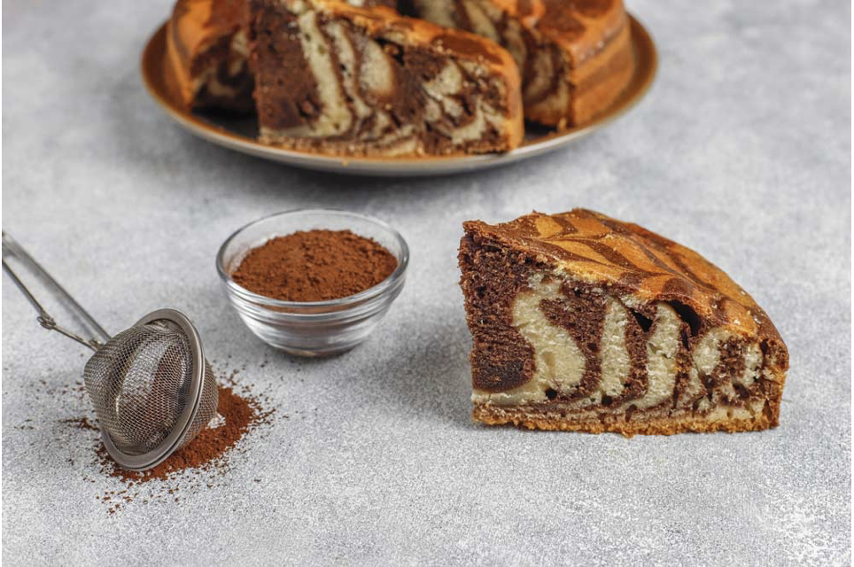

Bizcochuelo Marmolado

Ingredientes:
- 3 huevos.
- 1 taza de aceite (neutro).
- 2 tazas de harina 0000.
- 1 taza de azúcar.
- Esencia de vainilla.
- 4 cucharadas de cacao en polvo.
- 1 cucharadita de polvo para hornear.
TIP IMPORTANTE: sepan que antes de desmoldar el bizcochuelo marmolado es muy importante dejar que se entibie para correr menos riesgo de que se rompa. A su vez, no hay que dejar que se termine de enfriar para que el calor no lo humedezca.
Cómo hacer un bizcochuelo marmolado fácil, húmedo y esponjoso:
- Romper los huevos y colocarlos en un bowl junto con el azúcar y vamos a batir. Cremar la mezcla (batir) hasta que aclare un poco el color y se vuelva espesa y así vaya creciendo.
- Una vez que la mezcla se torna clarita y crece, agregar el aceite y a seguir batiendo. La idea es que sea un aceite neutro que no aporte un sabor demasiado fuerte a la preparación.
- Agregar unas gotitas de esencia de vainilla y seguir batiendo y batiendo. Bate que bate.
- Una vez que está todo unido, vamos a dejar de batir y vamos a agregar la primera taza de harina junto con la cucharadita de polvo para hornear, tamizando con un coladorcito para evitar grumos en un futuro. Mezclar, esta vez sí, con una espátula. Una vez que todo se incorporó bien agregar la segunda taza de harina y repetir el procedimiento de mezclado.
- Dividir la masa en tres partes. ⅓ (un tercio) ponerla en un bowl y reservar el resto. Al tercio separado, agregarle las 4 cucharadas de cacao en polvo.
- Sólo resta enmantecar, enharinar un molde y alternando adentro los dos colores.
- Llevar al horno a 180º entre 40 y 50 minutos, aproximadamente. ¡Sean pacientes! Hay que dejar el horno cerrado hasta que pasen los primeros 40 minutos porque sino la maravillosa creación corre peligro de pincharse y eso no tiene que pasar.
- ¡Momento de la prueba del palito! Pasados los 40 minutos, abrir el horno e introducir un palillo o cuchillo dentro del bizcochuelo, si sale seco quiere decir que está listo y es momento de sacarlo.